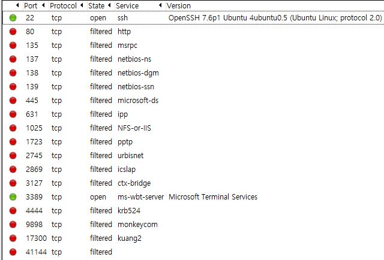
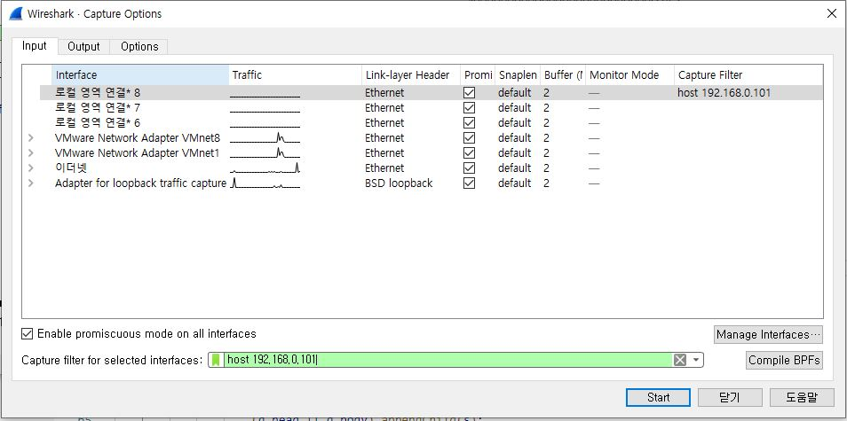

ip기반 host정보 확인 프로토콜이다.
ping을 전송할 때는 TTL이 하나씩 줄어드는데
최대 값은 255이고 255부터 -> 0까지 감소하고 0이 되면 packet이 소멸한다.
4번의 ping을 3쌍씩 보내 ip의 경로를 알아낸다.
nmap -T4 -A -v
-T4 = connect() 함수를 이용한 Open 스캔(4번 한다)
-A = ACK 패킷에 대한 TTL 값의 분석이다.
-v 세부 사항을 표시한다.
상대의 ip 주소를 탐색해 열려있는 port를 찾는다.
sudo hping3 192.168.0.2 -1 --flood -a 192.168.0.255 -d 999999
최대치 이상의 패킷은 잘려서 다음 패킷에서 전송한다.
특정 ip 주소를 영구적으로 스캔하고 싶다면 아래의 설정을 하면 된다.
